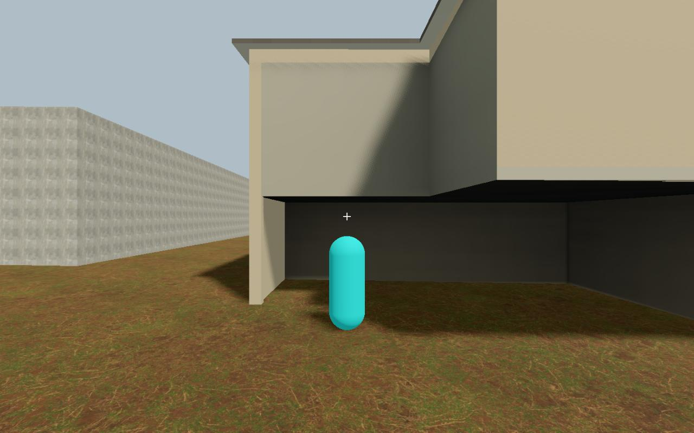
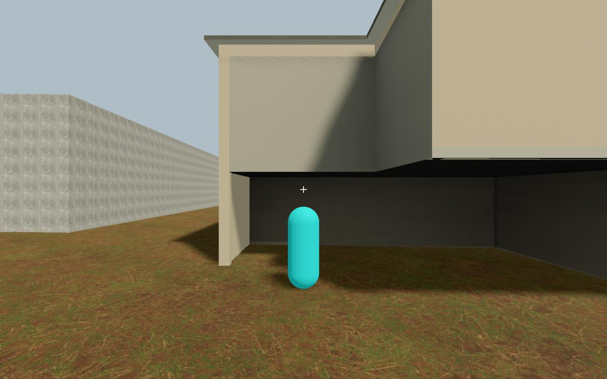
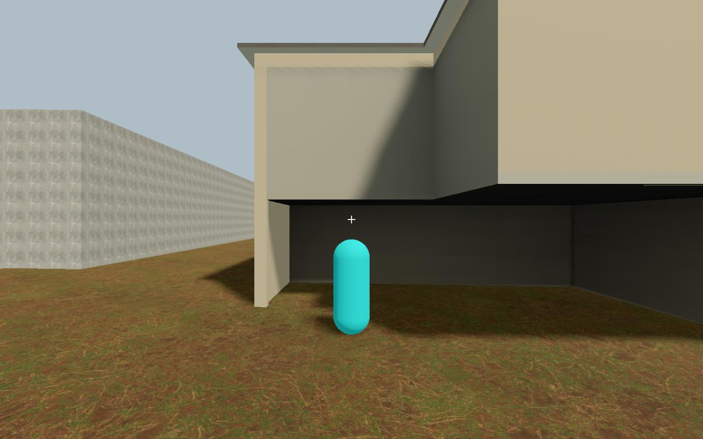
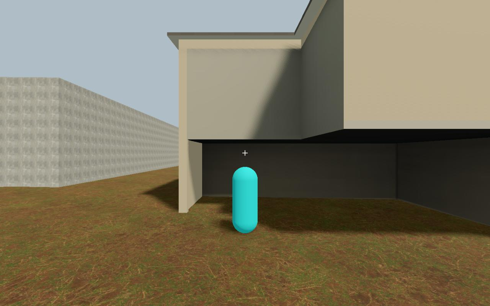

STATIC visual PASS and joined scoped physical mechanics PASS. CLOSE-MOTION FINISH HOLD: a thin pale underside/lip sliver changes during retreat; cause unassigned. No promotion.
Scope · Provenance · Gallery index


AVI zero-based frame194

AVI zero-based frame195

AVI zero-based frame196

AVI zero-based frame198

Exact JPEG payload extracts; sampled comparison, not uninterrupted playback. Static PASS retained; no further tuning this round.